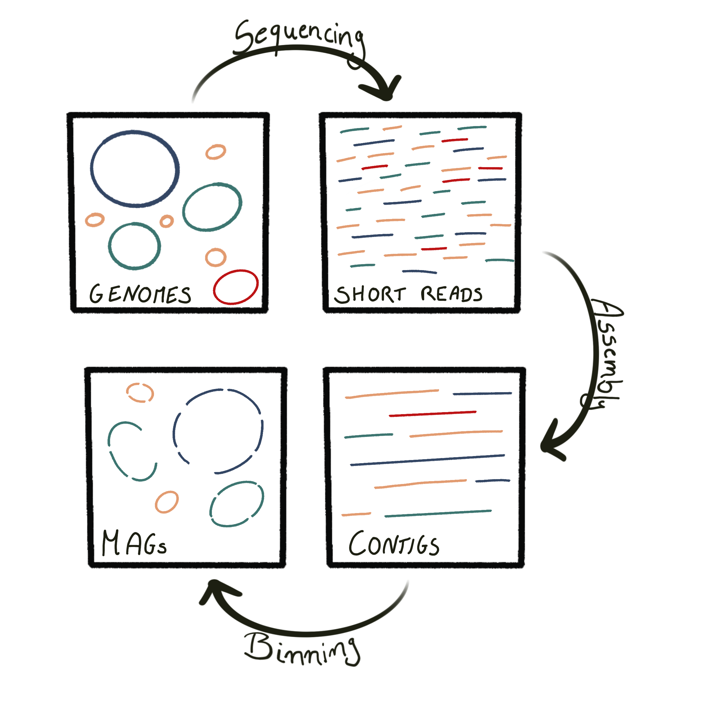
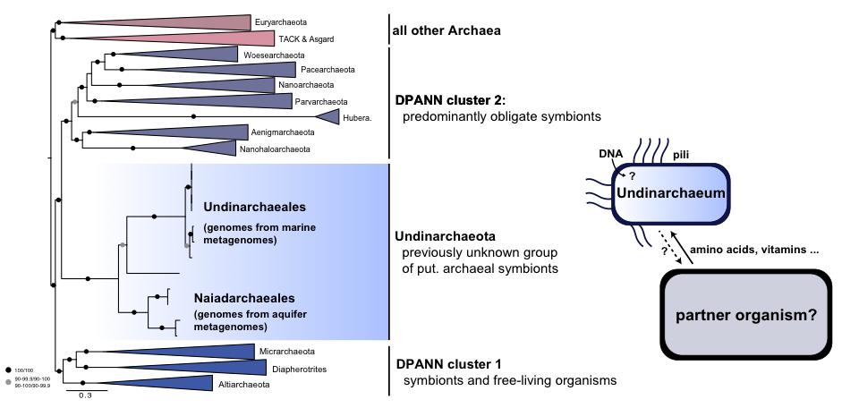
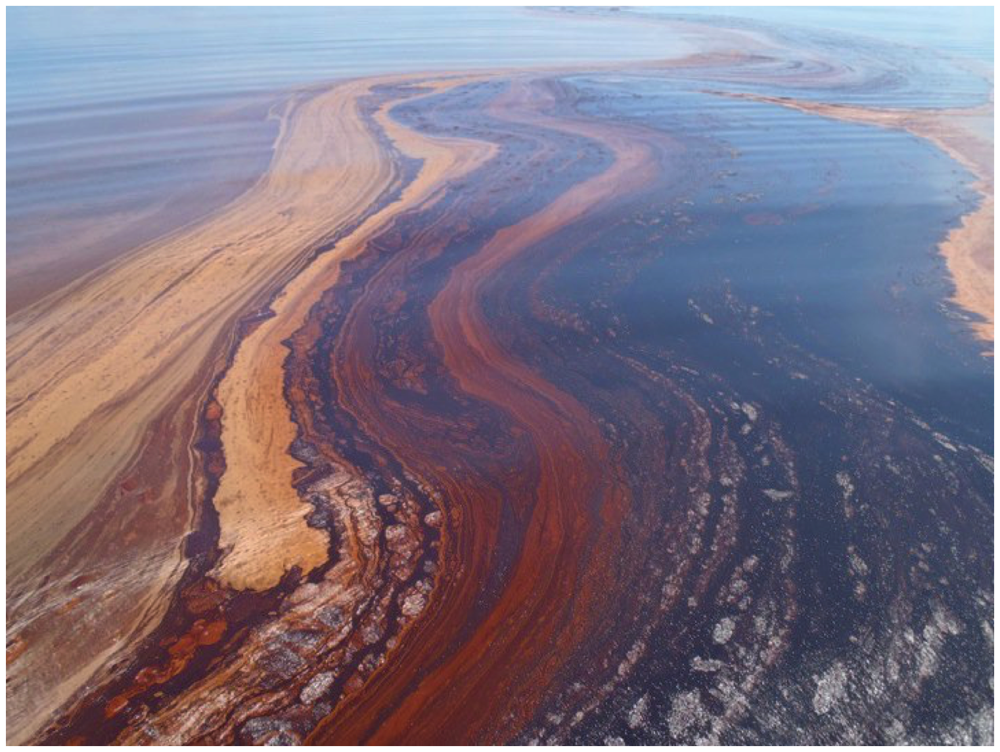
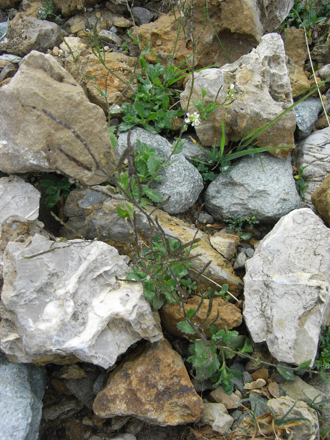
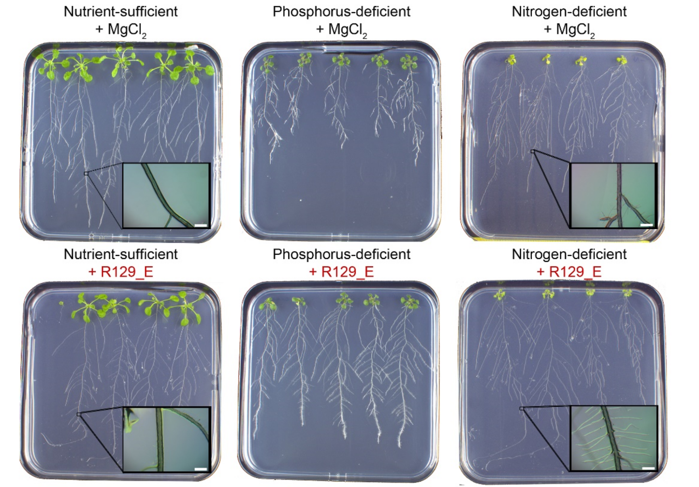

Projects
Current work as bioinformatician at the University of Amsterdam
I am currently working as bioinformatician at the Institute for Biodiversity and Ecosystem Dynamics (IBED) at the University of Amsterdam.
My role is to bridge the intersection of biology and computer science and to guide and support scientists, postdocs, and PhD students in the bioinformatic analysis of their data. I am doing this as member of the IBED Computational Support Team.
My areas of expertise (see also below for a more detailed description) include amplicon sequencing, metagenomics as well as phylogenomics. Additionally, I am adept in using R and Python to analyse computational data.
Postdoc at the NIOZ (Netherlands)
Exploring the hidden world of DPANN archaea using metagenomic approaches
As a Postdoctoral researcher at the Royal Netherlands Institute for Sea Research (NIOZ) in the Netherlands, I was working in the lab of Dr. Anja Spang.
My research focused on using metagenomic approaches to investigate archaea, one of the main divisions of life alongside Bacteria and Eukaryotes. Archaea live in a variety of habitats on Earth, including soils, sediments, marine and freshwater environments, and even the human gut.
Through metagenomics, we can sequence DNA directly from environmental samples and reconstruct genomes from uncultivated organisms. This technique has revealed the diversity of microbial life and the roles of these organisms in their habitats. In particular, the DPANN archaeal superphylum contains a large diversity of putative symbiotic organisms, many of which have small genomes and limited metabolic capabilities, suggesting that they rely on other microbes for growth and survival. The few DPANN archaea that have been cultivated are likely obligate symbionts or parasites.

My research focused on gaining insights into the biology and evolution of DPANN archaea. Specifically, I am interested in understanding the diversity of DPANN archaea in marine environments, developing approaches to identify the interaction partners of DPANN archaea, and finding the position of DPANN in the archaeal tree of life. This will help to address the question of whether symbiosis evolved early in the archaeal domain.

Left: Potential dependencies of Undinarchaeota with a host as inferred from metagenomics.
Find out more:
- Genomic diversity, lifestyles and evolutionary origins of DPANN archaea
- Talking about a novel phylum in the DPANN archaea
Investigating Microbial Diversity and Nutrient Dependencies in the Black Sea
As a postdoctoral researcher at the Royal Netherlands Institute for Sea Research (NIOZ), I also investigated microbial communities in the Black Sea using metagenomic approaches. This stratified and anaerobic marine environment provides stable conditions that make it an ideal study site.
Through this research line, we aim to compare microbial communities at different depths and untangle the nutrient interdependencies of microbes in both the water column and sediment. Our preliminary data has revealed that DPANN archaea are extremely diverse and abundant in the Black Sea. As such, we are working to build methods to predict the host of these DPANN archaea based on sequencing data.
By understanding the microbial diversity and nutrient dependencies in the Black Sea, we hope to gain a better understanding of how these microorganisms interact with their environment and contribute to global biogeochemical cycles.

Postdoc at the University of Texas (USA)
Investigating the Diversity and Metabolic Potential of Hydrothermal Vent-Associated Microbes
During my postdoctoral work at the Marine Science Institute (University of Texas) in the lab of Dr. Brett Baker I focused on understanding the diversity and metabolic potential of microbes found in hydrothermal vent sediments. By reconstructing microbial genomes and analyzing their metabolic capabilities, I aimed to answer two key questions:
- How diverse are the microbial communities found in Guaymas Basin deep-sea hydrothermal vent sediments?
- What is the genetic, functional, and metabolic potential encoded in the bacterial genomes from these sediment communities?
By studying these communities, I aimed to gain insights into the role of microbes in hydrothermal vent ecosystems and their potential for biotechnological applications.
Find out more:

Genome reconstruction of oil-degrading bacteria
As part of my postdoctoral research, I conducted another project on identifying hydrocarbon degradation pathways in genomes from uncultured bacteria from water affected by the Deep Water Horizon Oil Spill. My research focused on the following questions:
- Which hydrocarbon-degrading bacteria were present during the Deepwater Horizon oil spill?
- What are the pathways employed by these bacteria for oil degradation?
- What genetic features do these bacteria possess that enable them to adapt quickly to a high oil input?
Through reconstructing their genomes, we gained insight into the metabolic capabilities of these bacteria and their potential role in oil spill remediation.

Find out more:
- Reconstructing metabolic pathways of hydrocarbon-degrading bacteria from the Deepwater Horizon oil spill
- Can we harness bacteria to help clean up future oil spills?
Previous Research
PhD
Investigating the Bacterial Microbiota in Plant Roots and Their Impact on Plant Growth
During my doctoral research (2012-2015) in the lab of Prof. Schulze-Lefert at the Max-Planck-Institute for Plant Breeding Research in Cologne, Germany, I focused on two main research topics related to bacterial microbiota in plant roots:
- Analyzing the structure and function of the bacterial root microbiota of Arabidopsis thaliana and relative species. Here, I aimed to answer:
- What is the structure of bacterial communities found in natural soil, rhizosphere, and plant roots of Arabis alpina, Arabidopsis thaliana, and Cardamine hirsuta?
- What factors (e.g., environment, soil type, flowering) shape the assembly of bacterial communities?
Find out more:
- Root microbiota dynamics of perennial Arabis alpina are dependent on soil residence time but independent of flowering time
- Quantitative divergence of the bacterial root microbiota in Arabidopsis thaliana relatives

the French Alps
- Cultivating root-associated rhizobia and studying their plant growth-promoting properties on Arabidopsis thaliana. My research questions were:
- How diverse is the rhizobia population found on the roots of Arabidopsis thaliana?
- What is the role of root-associated rhizobia in plant growth?
- How do rhizobia affect the plant transcriptome?

under different nutrient conditions
Find out more:
Masters
Investigating Auxin-Inducible Genes in Arabidopsis thaliana Using Translating Ribosomal Affinity Purification (TRAP)
For my undergraduate research, I worked in the QuintLab at the Leibniz Institute for Plant Biochemistry in Halle, Germany. My thesis focused on investigating auxin-inducible genes in Arabidopsis thaliana using the new experimental technique of translating ribosomal affinity purification (TRAP).
Specifically, I:
- Established TRAP as a new experimental technique to isolate cell-type-specific mRNA, as well as developed new cell-type-specific marker lines.
- Investigated the effect of auxin application on the expression of marker genes in different root-cell types.